Solutions to In-Chapter Exercises
Contents
Solutions to In-Chapter Exercises#
Organic Chemistry
With a Biological Emphasis
by Tim Soderberg
Chapter 1#
E1.1:
a) The atomic number of P (phosphorus) is 15, meaning there are 15 protons. The mass number for the 31P isotope is 31, so:
15 protons + 16 neutrons = mass number 31
(recall that mass number is number of protons and neutrons).
(for parts b-d, use the same reasoning as above)
b) 15 protons + 17 neutrons = mass number 32
c) 17 protons + 20 neutrons = mass number 37
d) 1 proton + 2 neutrons = mass number 3
e) 6 protons + 8 neutrons = mass number 14
E1.2:
a) 1s22s22p3
b) 1s22s22p4
c) 1s22s22p5
d) 1s22s22p63s2
e) 1s22s22p6 (same as Neon atom)
f) 1s22s22p63s23p64s1
g) 1s22s22p63s23p6 (same as Argon atom)
h) 1s22s22p63s23p6 (same as Argon atom)
i) 1s22s22p63s23p4
j) 1s2 (same as Helium atom)
k) 1s22s22p63s23p6 (same as Argon atom)
E1.3:


 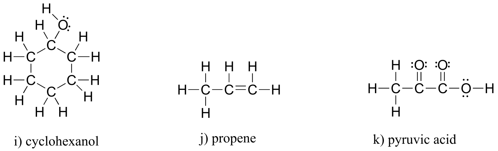
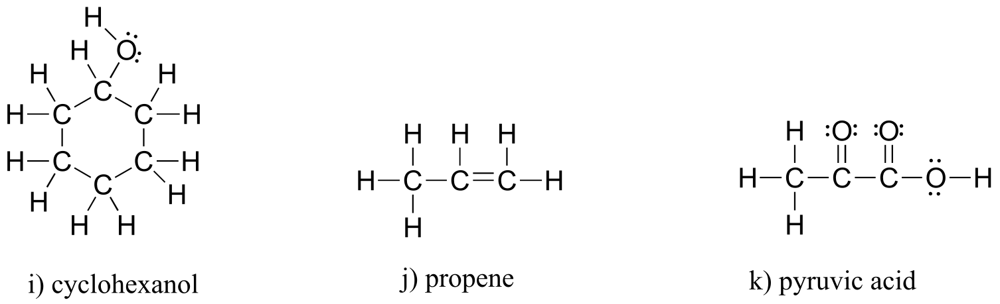
E1.4:

E1.6: Below are full structural drawings, showing all carbons and hydrogens:


E1.8:

E1.10: There is only one constitutional isomer of ethanol: dimethyl ether CH3OCH3
E1.11:
a)

b)

c)
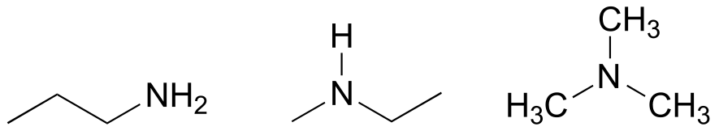E1.12:
a) carboxylate, sulfide, aromatic, two amide groups (one of which is cyclic)
b) tertiary alcohol, thioester
c) carboxylate, ketone
d) ether, primary amine, alkene
E1.14:
acetic acid: ethanoic acid
chloroform: trichloromethane
acetone: propanone (not 2-propanone, because the ‘2’ in this case would be redundant: if the carbonyl carbon were not in the #2 position, the compound would be an aldehyde not a ketone)
E1.17: The linking group is a phosphate diester
Chapter 2#
E2.1:

E2.2: sp3 orbital on carbon overlapping with 3p orbital on chlorine.
E2.3: Both the carbon and the nitrogen atom in CH3NH2 are sp3-hybridized. The C-N σ bond is an overlap between two sp3 orbitals.

E2.4: Atoms in red all lie in the same plane.

E2.5: The carbon atoms in an aromatic ring are sp2 hybridized, thus bonding geometry is trigonal planar: in other words, the bonds coming out of the ring are in the same plane as the ring, not pointing above the plane of the ring as the wedges in the incorrect drawing indicate. A correct drawing should use lines to indicate that the bonds are in the same plane as the ring:
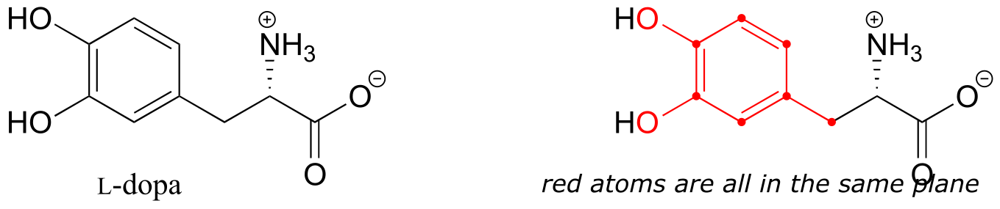E2.6:
a) The carbon and nitrogen atoms are both sp2 hybridized. The carbon-nitrogen double bond is composed of a σ bond formed from two sp2 orbitals, and a π bond formed from the side-by-side overlap of two unhybridized 2p orbitals.
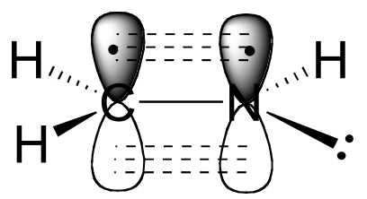b) As shown in the figure above, the nitrogen lone pair electrons occupy one of the three sp2 hybrid orbitals.
fig 4
E2.7:

E2.8:
a)
bond b: Nsp2-Csp3 (this means an overlap of an sp2 orbital on N and an sp3 orbital on C)
bond c: Csp2-Csp2 plus C2p-C2p (π)
bond d: Csp2-Csp3
bond e: Csp3-Csp3
bond f: Csp3-Csp3
bond g: Csp2-Csp2 (σ) plus C2p-C2p (π)
bond h: Csp2-H1s
bond i: Csp2-Csp2
b)
bond a: lone pair on N occupies an sp2 orbital
bond e: lone pair on N occupies an sp3 orbital
E2.9:
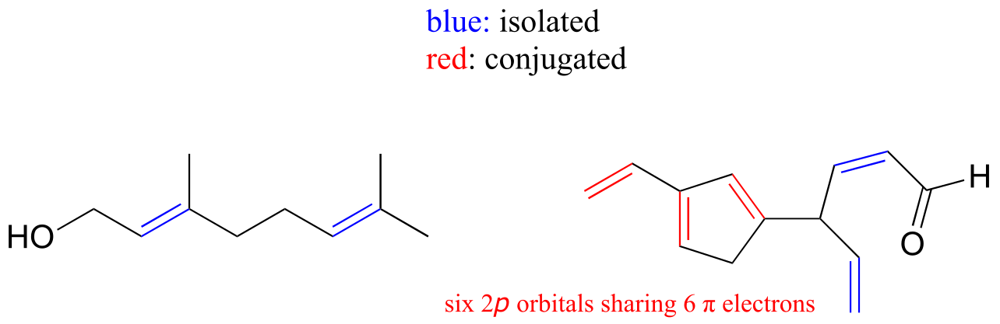E2.10: The conjugated system contains 22 2p orbitals sharing 22 π electrons

E2.11:
Indole: nitrogen is ‘pyrrole-like’ (lone pair is part of aromatic ring)
Purine: N1, N3, and N7 are pyridine-like (lone pair in sp2 orbital); N9 is ‘pyrrole-like’.
E2.12:

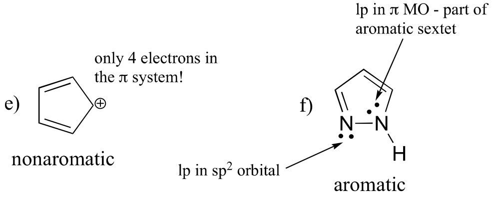
E2.13:

E2.14:

E2.15:

**
**
E2.16:

Left: an H atom has been added - in resonance contributors, only π electrons and lone pairs are rearranged.
Right: Following the curved arrow, the oxygen atom should have only 6 electrons and thus a positive formal charge. Also the nitrogen is breaking the octet rule (remember that drawing lone pairs is optional, so even if they are not drawn you need to assume they are there)

Left: The CH3 carbon is breaking the octet rule with 5 bonds.
Right: One carbon would have a positive formal charge if the arrows are followed, and the other breaks the octet rule with 5 bonds (keep careful track of hydrogen atoms when they are not drawn in line structures!)

Left: One oxygen should have a positive formal charge, and one breaks the octet rule.
Right: a) the arrow shows this single bond breaking - you can’t break single bonds in a resonance contributor. b) the arrow shows a triple bond forming here, which would also mean the oxygen is breaking the octet rule.
**
**
E2.17:
a)

The contributor on the left is minor because it a) has a separation of charges, and b) the carbon has an incomplete octet.
b) Acetone and 2-propanol have the same molecular formula but different atom-to-atom bonding arrangements. Therefore, they are constitutional isomers, not resonance contributors.
E2.18:
a) Minor contributors have additional separation of charge.
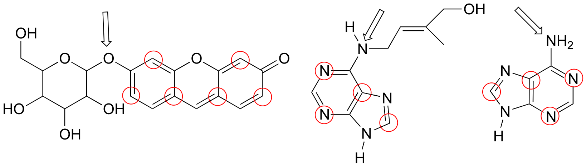b)
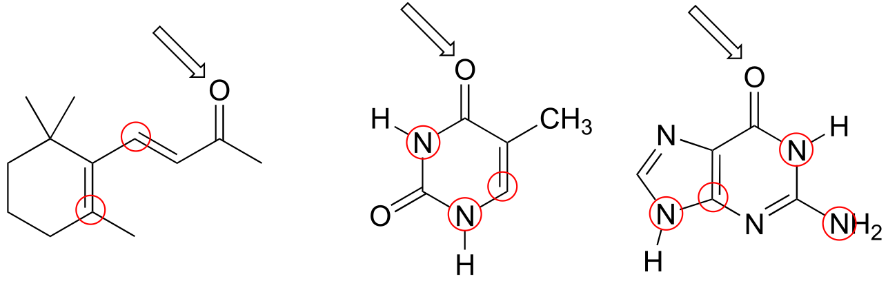E2.19:
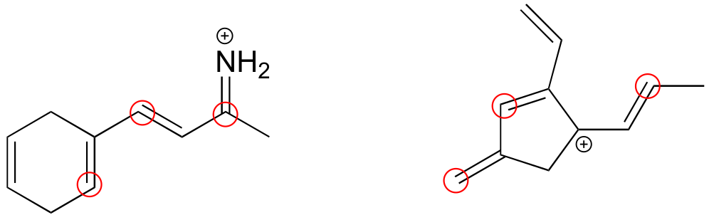The contributor on the left is the most stable: there are no formal charges.
The contributor on the right is least stable: there are formal charges, and a carbon has an incomplete octet.
The contributor in the middle is intermedia/ICE_solutionste stability: there are formal charges, but all atoms have a complete octet.
E2.20: Consult your instructor or tutor for an evaluation of your orbital drawings. Both contributors should show three overlapping p orbitals (on the oxygen, carbonyl carbon, and nitrogen) sharing four π electrons.
E2.21: Consult your instructor or tutor for an evaluation of your orbital drawings. Both contributors should show three overlapping p orbitals sharing four π electrons.
**
**
E2.22:
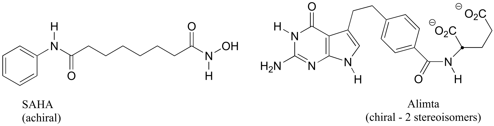This contributor is major because there are no formal charges.
E2.23:
a)

fig 3
b) The conjugated π system in this carbocation is composed of seven p orbitals containing six delocalized π electrons.
E2.24:
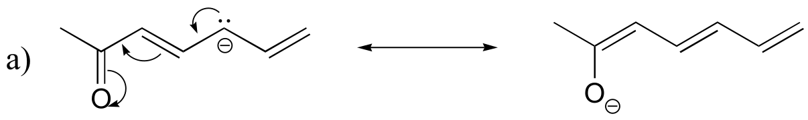 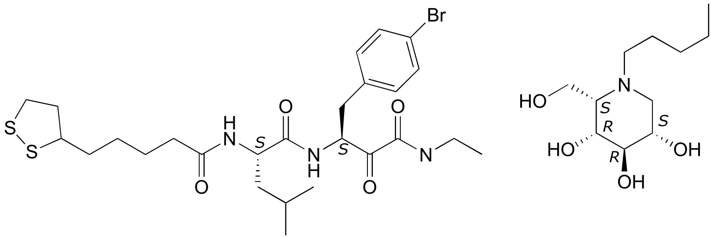fig 3
c) The conjugated π system in structure a) is composed of seven p orbitals containing eight delocalized π electrons.
E2.25: The two major contributors or those in which the negative formal charge is located on an oxygen rather than on a carbon.

E2.26:
The horizontal trend is based on atomic number (the number of protons in the nucleus). For example, fluorine is more electronegative than carbon, because the fluorine nucleus contains three more protons, the positive charges on which pull negatively-charged electrons closer to the nucleus.
The vertical trend is based on atom size, specifically the size of the ‘electron cloud’ surrounding the nucleus. For example, fluorine is more electronegative than chlorine (even though chlorine contains more protons) because the outermost valence electrons on fluorine, which are in the n = 2 “shell”, are closer to the nucleus than the valence electrons in chlorine, which occupy the n = 3 “shell”. The fluorine electron cloud, therefore, is subject to greater electrostatic attractive forces from protons (electrostatic forces decrease rapidly as the distance between the positive and negative charges increases.)
E2.27: Only molecule (b) does not have a molecular dipole, due to its symmetry (bond dipoles are equal and in opposite directions).
E2.28: To be a hydrogen bond donor, the molecule needs to have a hydrogen bound to N, O, or F. To be an acceptor, it merely needs an N, O, or F.

E2.29: Note in part (c) that methyl acetate can only be a hydrogen bond acceptor, not a donor.

E2.30: The main factors in these examples are the number of H-bonding groups, whether groups are H-bond acceptors and donors or just acceptors, and the number of carbons.
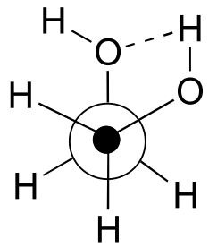E2.31: Ascorbic acid and niacin are water soluble (lots of hydrophilic groups relative to the number of carbons). Retinol is fat-soluble (only one hydrophilic alcohol group, a large hydrophobic hydrocarbon group.
E2.32: Aniline is basic and would be protonated (and thus cationic) in aqueous HCl. Charged species are generally water soluble. On the other hand, phenol is not basic and thus would remain as a neutral, water-insoluble molecule.
E2.33: Both alcohol solvents could form H-bonds with cyclohexanone, but isopropanol is less polar (it has three carbons), and thus would be the better solvent for the relatively nonpolar cyclohexanone.
E2.34: Benzene has no polar groups and thus has the lowest boiling point (nonpolar interactions only holding molecules together). Benzaldehyde can form intermolecular dipole-dipole interactions; phenol and benzaldehyde can both form intermolecular H-bonds, but benzaldehyde has more dipole-dipole interactions due to the additional oxygen atom.
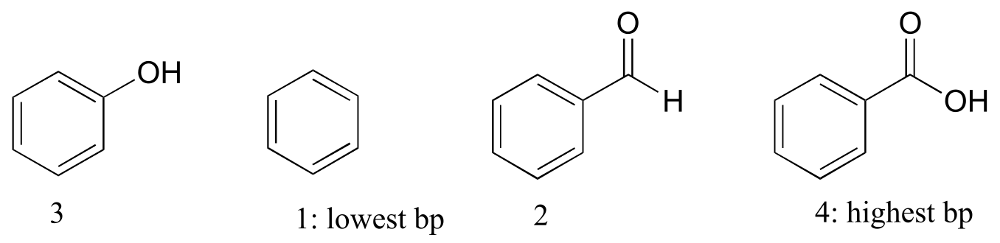E2.35: Hexane has the higher melting point. Both compounds have an equal number of carbons and hydrogens and are nonpolar, so it comes down to shape. 2-3-dimethylbutane is more sphere-like and is capable of less efficient molecule-to-molecule packing, so it has weaker intermolecular interactions and thus a lower melting point.
Chapter 3#
E3.1:
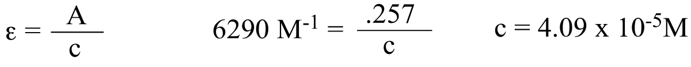E3.2:

E3.3: Recall from your General Chemistry course that ∆G0, the standard Gibbs Free Energy change of a reaction (or in this case, a conformational change) is related to the equilibrium constant Keq by:
∆G0 = RTlnKeq or Keq = e^(-∆G0/RT)
where R is the gas constant 8.314 J mol-1 K-1
Using T = 298K (25oC) and ∆G0 = -7.0 kJ/mol, we calculate Keq = 17.
Note that ∆G0 has a negative value because the methyl-axial to methyl-equatorial ring flip is an energetically downhill process. Because the equatorial conformation is more stable, it makes sense that the equilibrium constant for the ring flip is greater than 1.
E3.4: Note in (b) that one of the substituents must be in the axial position. In the lower energy chair conformation, it is the smaller methyl group that assumes the axial position.
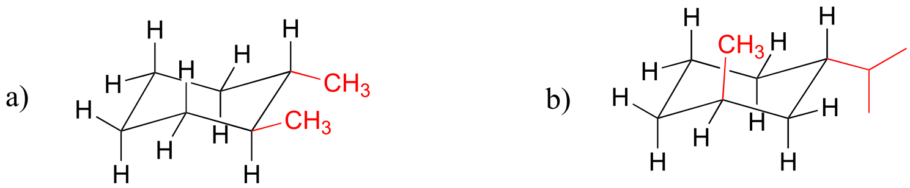E3.5: To answer these questions, you will want to draw out the chair conformations of the compounds specified.
a) cis-1,3-dimethylcyclohexane: the two methyl groups are either both equatorial or both axial. In cis-1,4-dimethylcyclohexane, one methyl group is always axial and one equatorial, so the two conformations have the same energy.
b) trans-1,2-dimethylcyclohexane: the two methyl groups are either both equatorial or both axial. In cis-1,2-dimethylcyclohexane, one methyl group is always axial and one equatorial, so the two conformations have the same energy.
c) trans-1-isopropyl-2-methylcyclohexane: both compounds are either diaxial or diequatorial, but the larger isopropyl substituent means that the difference between the diaxial and diequatorial conformations is larger.
E3.6: No. In order to change the relationship of two substituents on a ring from cis to trans, you would need to break and reform two covalent bonds. Ring flips involve only rotation of single bonds
E3.7:

E3.8: Chiral centers are designated with a dot.
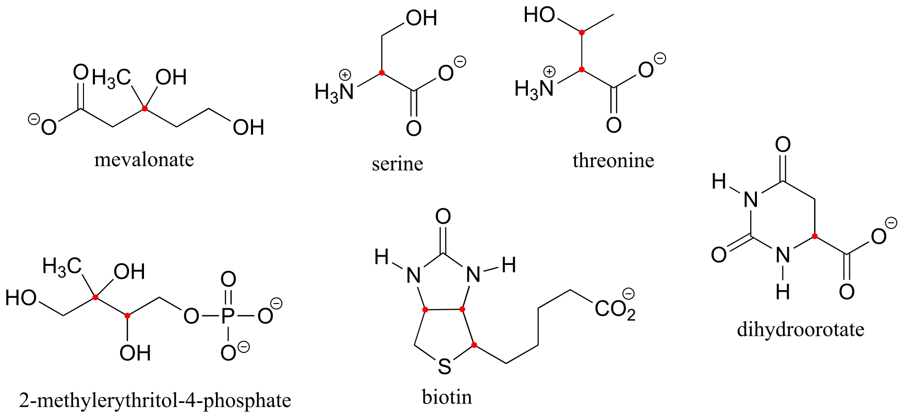E3.9: (there are other ways that the two enantiomers can be drawn correctly - check your drawing with your instructor or tutor)
a)

b) No, the two structures are identical. In both drawings, the bond to the OH is pointing out of the plane of the page - it doesn’t matter whether the solid wedge is pointing to the left or the right. Make models of the two drawings and you will see they are exactly the same.
**
**
E3.10:

E3.11:
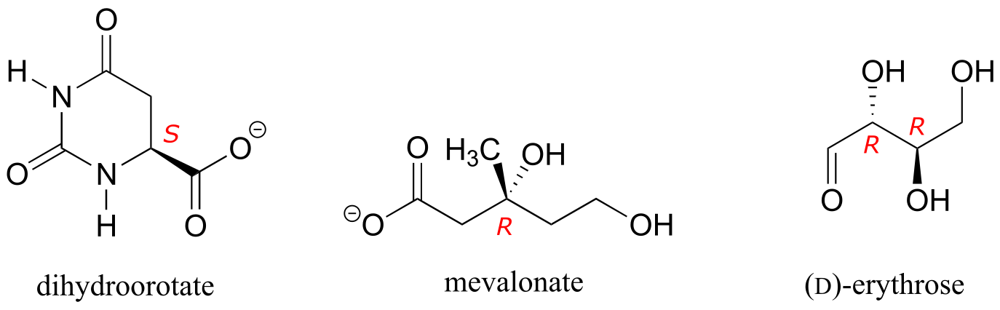E3.12: The C-O bond should be drawn as a dash to get the R configuration.
E3.13:

E3.14: The value of c is 7.50 g/100 mL, so using the definition of specific rotation, the observed rotation is expected to be (11.5)(7.5) = 86.3o.
E3.15: The observed rotation of the mixture is levorotary (negative, counter-clockwise), and the specific rotation of the pure R enantiomer is given as dextrorotary (positive, clockwise), meaning that the pure S enantiomer must be levorotary, and the mixture must contain more of the S enantiomer than of the R enantiomer.
E3.16: Cysteine is the only common L-amino acid with S configuration. This is solely due to the rules of the naming system: the carbon of the side chain - which is directly bonded to a sulfur - has higher priority than the carboxylate carbon. In the other 19 amino acids, the carboxylate carbon has priority #2, and the side chain carbon has priority #3.
E3.17:
a) Starting with the RRR stereoisomer (which is given in the example), we flip the first and third chiral center to get SRS. The enantiomer of the SRS stereoisomer is that in which all three chiral centers are flipped: the RSR stereoismer.

b) Epimers of the SRS stereoismer are RRS, SSS, and SRR (in each case, one of the three chiral centers has been flipped)
c) How to find the compounds that are diastereomers of the SRS stereoisomer, but not epimers? Start with the list of the eight possible stereoisomers given in the example. Cross out SRS itself, and its enantiomer RSR (determined in part (a) above). Then cross out the three epimers we found in part (b). We are left with three isomers: RRR, SSR, and RSS. Each of these have one chiral center in common with SRS, and two that are flipped.
RRR ~~RRS~~ ~~RSR~~ RSS
~~SSS~~ SSR ~~SRS~~ ~~SRR~~
E3.18: This is the SRR stereoisomer.

E3.19:
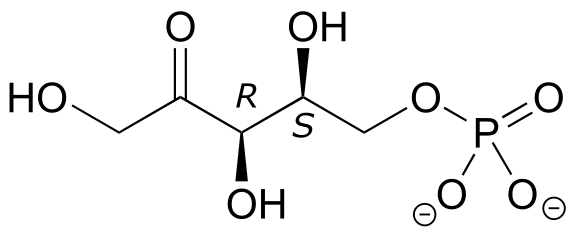E3.20:

E3.21: Going left to right, top to bottom:
Diastereomers (two chiral centers are flipped).
Enantiomers (all five chiral centers are flipped).
Identical (drawing is flipped vertically but they are the same structure).
Identical (the carbon which appears to be flipped in the drawing is not a chiral center).
Constitutional isomers (same molecular formula, but notice that inositol does not have a ring oxygen. Is not a monosaccharide, it is a cyclohexane with six hydroxyl substituents.)
E3.22:
a) Identical. They have the same molecular formula and connectivity; there is only one chiral center, which is R in both structures.
b) Enantiomers. The compound on the left is R, compound on the right is S.
c) Enantiomers. The compound on the left is R, compound on the right is S.
d) Enantiomers. The compound on the left is SS, compound on the right is RR.
e) Identical. The structures are both glycerol, which is not chiral (the left and right ‘arms’ are the same, so the middle carbon is not a chiral center)
f) Identical. Both structures are SS. Also, notice that if you rotate the right-side structure 120 degrees clockwise, it becomes exactly the same as the left-side structure.
E3.23:
a) Not meso b) Meso. c) Not meso
d) Meso e) Not meso f) Meso
E3.24:

E3.25:
a) E b) N c) Z d) E
**
**
E3.26:

E3.27: The enantiomers of the compounds shown are below. Note that the chiral centers are flipped, but the stereogenic alkenes are not.

E3.28:
Ephedrine and pseudoephedrin are diastereomers (epimers). There are two chiral centers, and one of them (the OH) is flipped.
Methamphetamine and levo-methamphetamine are enantiomers (only one chiral center, and it is flipped). Methamphetamine technically should be called dextro-methamphetamine.
**
**
E3.29:

E3.30:

E3.31:

Chapter 4#
E4.1:
a) You would expect to see fragments of m/z = 15, 29, 43, 57, and 72.

b) You would expect to see fragments of m/z = 29, 43 (cations); 57, 71 (acylium ions), and 102 (molecular ion).
c) All of the fragmentation events shown in the example would lead to fragments with m/z = 84.
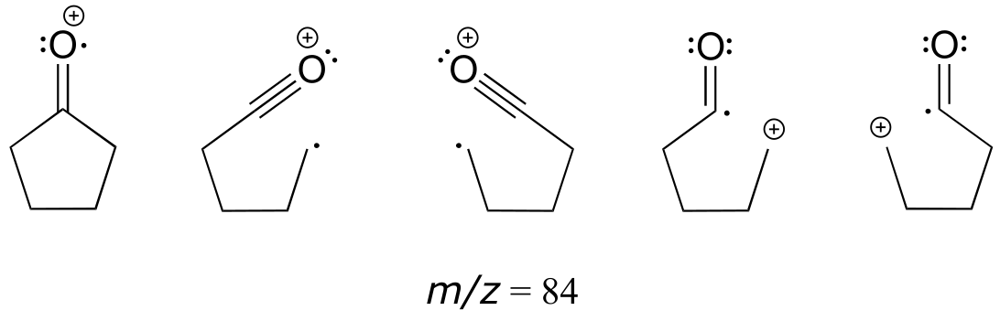E4.2: Chlorine has two main isotopes of mass 35 (abundance ~76%) and 37 (abundance ~24%). Therefore, fragments containing Cl would be seen in pairs with relative heights of about 3:1.
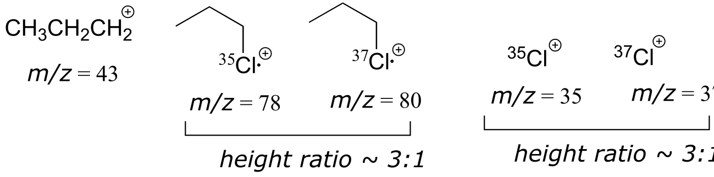E4.3: The mass spectrum fits that of propanal. The most abundant fragment (the base peak) is the acylium ion containing the aldehyde hydrogen.

E4.4:
Using λν = c, we first rearrange to ν = c/λ to solve for frequency.
For light with a wavelength of 400 nm, the frequency is 7.50 x 1014 Hz:

In the same way, we calculate that light with a wavelength of 700 nm has a frequency of 4.29 x 1014 Hz.
To calculate corresponding energies:
Using E = hν, we find for light at 400 nm:
E = (6.626 x 10-34 J.s) (7.50 x 1014 s-1)
4.97 x 10-19 J per photon, or 299 kJ per mole of photons if we multiply by Avagadro’s number.
Using the same process, we find that light at 700 nm corresponds to 171 kJ per mole of photons.
E4.5:
A wavenumber of 3000 cm-1 means that 3000 waves fit in one cm (0.01m):

We want to find the length of 1 wave, so we divide numerator and denominator by 3000:

So 3000 cm-1 is equivalent to a wavelength of 3.33 μm.
E4.6:

We can distinguish the alkenes from the alkenes by their respective C-C stretching bands. To distinguish between the two alkenes, we recognize that1,3-octadiene will have characteristic vinylic C-H stretching bands, whereas 1,2-dimethylcyclohexene will not. In a similar argument, 1-octyne will show a terminal alkyne C-H stretching band, while 3-octyne will not.
E4.7: Using the online Spectral Database for Organic Compounds, look up IR spectra for the following compounds, and identify absorbance bands corresponding to those listed in the table above. List actual frequencies for each signal to the nearest cm-1 unit, using the information in tables provided on the site.
a) 1-methylcyclohexanol: O-H stretching centered at 3375 cm-1
b) 4-methylcyclohexene: alkene C-H stretching at 3025 cm-1; alkene C-C stretching at 1651 cm-1
c) 1-hexyne: terminal alkyne C-H stretching at 3311cm-1, alkyne C-C stretching at 2120 cm-1.
d) 2-hexyne: alkyne C-C stretching at 2054 cm-1 (this signal is very weak, because the molecule is near-symmetrical and thus the triple bond has only a very weak dipole moment)
e) 3-hexyne-2,5-diol: O-H stretching centered on 2983. No alkyne C-C stretching band because the molecule is symmetrical.
E4.8: As carbon-carbon bonds get shorter and stronger moving from single to double to triple order, the stretching frequency becomes higher, meaning shorter wavelengths (higher wavenumbers) . Imagine two balls connected by a short, tight spring compared to the same two balls connected to a longer, looser spring. If you compress and release both springs so that the balls bounce back and forth, the shorter spring will bounce more rapidly (higher frequency).
E4.9: Using the same method as in Exercise 4.4, we find that photons of light with wavelength of 470 nm have energy of 255 kJ/mol.
E4.10: Molecule A has a longer system of conjugated π bonds, and thus will absorb at a longer wavelength. Notice that there is an sp3-hybridized carbon in molecule B which isolates two of the π bonds from the other three.

E4.11: We use the formula:

recall from your high school algebra that if y = log(x), then x = 10y , so:

… so the intensity of light entering the sample (I0) is 10 times the intensity of the light (at a particular wavelength) that emerges from the sample and is detected (I). Because %T is simply the reciprocal of this ratio multiplied by 100, we find that A = 1.0 corresponds to 10% transmission.
E4.12: Using ε = A/c, we plug in our values for ε and A and find that c = 16.3 ng/uL for the diluted sample. The original sample was 20 times more concentrated (remember that we diluted 50 uL of it into a total volume of 1000 uL), so the concentration of the original sample was 326 ng/uL, or 0.326 ug/uL.
Chapter 5#
E5.1: The energy gaps of the magnetic transitions in observed in NMR are much smaller than those of the vibrational transitions observed in IR spectroscopy. In NMR we are looking at absorbance of radiation in radio frequency ranges - radio waves are in the order of several meters long, compared to micrometers for infrared light. Remember that longer wavelengths have lower associated energy.
E5.2: Going left to right, top to bottom, the number of ‘sets’ of protons are:
3, 3 3, 2
8, 8, 6*
*The two terminal alkene protons are diastereotopic and thus non-equivalent.
E5.3:
a) 1 ppm of 500 MHz is 500 Hz. Thus chemical shifts of 2.0 and 3.6 ppm corresponds to 1000 Hz and 1800 Hz, respectively.
b) The actual resonance frequencies are the above chemical shifts added to 500 million Hz. Thus, they are 500,001,000 Hz and 500,001,800 Hz.
E5.4: The acetone:dichloromethane ratio is 0.76 to 1. If it was a 1:1 ratio, the signal integration ratio would be 3:1 because acetone has 6 protons while dichloromethane has 2. So you need to divide the 2.3 integral value by a factor of 3 to get 0.76.
E5.5: There are three peaks: two from para-xylene and one from acetone. The acetone peak and the para-xylene methyl peak both represent six protons, so the ratio of their integration values is simply 64 to 36 or 1 to 0.56. The ratio of the para-xylene methyl peak to the para-xylene aromatic peak is 6 to 4, or 0.56 to 0.37. So the final integral ratio of acetone:methyl:aromatic signals should be 1 to 0.56 to 0.37.
E5.6:
a) Ha is higher - closer to carbonyl
b) Hb is higher - adjacent to two carbonyl groups
c) Ha is higher. Consult Table 2: Amide protons (Ha) are 5-9 ppm, while ether protons (Hb) are 3.7 - 3.9 ppm.
d) Ha is most likely higher. Aromatic protons (Ha) are 6.0 - 8.7 ppm, while vinylic protons (Hb) are 3.7 - 6.5 ppm)
e) Ha is higher
f) Hb is higher - aldehyde protons are 9.5 - 10 ppm
g) Hb is higher - both are adjacent to carboxylate, but Hb is also adjacent to OH.
E5.7: The molecule contains two groups of equivalent protons: the twelve pointing to the outside of the ring, and the six pointing into the center of the ring. The molecule is aromatic, as evidenced by the chemical shift of the ‘outside’ protons’ (and the fact that there are 18 π electrons, a Hückel number). The inside protons are shielded by the induced field of the aromatic ring current, because inside the ring this field points in the opposite direction of B0. This is the source of the unusually low (negative relative to TMS) chemical shift for these protons.
E5.8:
a)

b) The figure above demonstrates that the quartet subpeaks integrate to 1:3:3:1 (eg., there are three ways for two spins to be aligned with B0 and one against B0). As an analogy, if you flip three coins at once, you have a 1 in eight chance of getting all heads, 1 in 8 chance of all tails, a 3 in 8 chance of two heads and a tail, and a 3 in 8 chance of two tails and a head.
E5.9:
Because of the symmetry in the molecule, there are only four proton signals. Predicted splitting is indicated.

E5.10: We would expect to see nine signals, although signals may overlap in an actual spectrum. Remember that protons bound to heteroatoms (oxygen, nitrogen, sulfur) generally do not couple to adjacent protons, and give broad peaks.

E5.11:
a: doublet, 3J ~ 2-3 Hz
b: doublet of doublets, 3Jbc ~12-18 Hz; 3Jab ~ 2-3 Hz
c: doublet, 3J ~ 12-18 Hz
d: doublet, 3J ~ 2-3 Hz
e: triplet, 3J ~ 2-3 Hz
E5.12:

E5.13:
a) 4-heptanone (there are only three proton signals due to symmetry):

b) cyclopentanone
c) butaldehyde (aldehyde protons are in the 9.5-10 ppm range.
E5.14: Each spectrum will have two in the range for vinylic protons, in each case both of these signals will be doublets. In the spectrum for compound A, the coupling constant will be in the 12-18 Hz range (trans), in compound B it will be in the 6-12 Hz range (cis), and in compound C it will be in the 0-2 Hz range (gem).
E5.15: From top to bottom, left to right:
3 3 3 3
8 11 6
E5.16:
a) 5 b) 5 c) 3 d) 12
E5.17: Spectrum A is of methyl methacrylate, spectrum B is of toluene (methylbenzene). The chemical shifts of all carbons are indicated below, based on the spectra provided.
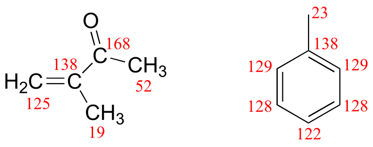E5.18:

E5.19:
a) Check your structures with your instructor or tutor.
b) In this case, n = 3 and A = 8+0-1-1 = 6
so IHD = (8-6)/2 = 1
This makes sense as there is only one double bond in alanine.
c)
ascorbic acid: one ring and two double bonds, so IHD = 3
thiamine: two rings and five double bonds, so IHD = 7
E5.20: Carbons are labeled by number, protons by lower-case letter.

Compound A:
1H-NMR:
1.62 ppm, 9H, s methyl protons
13C-NMR:
67.14 ppm (C) 1
34. 47 ppm (CH3) 2
Compound B: (1-chlorobutane) 1H-NMR: 3.42 ppm, 2H, t Ha 1.68 ppm, 2H, pentet Hb 1.41 ppm, 2H, sextet Hc 0.92 ppm, 3H, t Hd 13C-NMR: 44.74 ppm (CH2) 1 34.84 ppm (CH2) 2 20.18 ppm (CH2) 3 13.34 ppm (CH3) 4 |
Compound C: (2-chlorobutane) 1H-NMR: 3.97 ppm, 1H, sextet Hb 1.71 ppm, 2H, pentet Hc 1.50 ppm, 3H, d Ha 1.02 ppm, 3H, t Hd 13C-NMR: 60.34 ppm (CH) 2 33.45 ppm (CH2) 3 24.94 ppm (CH3) 1 11.08 ppm (CH3) 4 |
|---|
E5.21: The ‘center of mass’ of the doublet of doublets is 1863 Hz. The large coupling is 17.4 Hz, so first we subtract half of 17.4, or 8.7, from 1863 to get 1854.3 Hz. To find the frequency of the most upfield peak, we subtract half of the small coupling (1.5 divided by 2) to get 1854.3 - 0.75 = 1853.6 Hz

**
**
E5.22:

E5.23: The two signals can be differentiated simply by determining the ‘large’ coupling constant for each: 10.5 Hz for the cis coupling between Ha and Hb, and 17.4 Hz for trans coupling between Ha and Hc.
E5.24:

E5.25: If you draw such a signal to approximate scale, you see that it is a doublet of triplets: the subpeaks at 1586, 1583, and 1580 Hz make up the upfield triplet, the other three the downfield triplet. The fine splitting is 3 Hz (note that 1586-1583 = 3, or 1569-1566 = 3, etc.). To find the recorded chemical shift, simply take the average of all six subpeaks (or simply the average of the two middle subpeaks, 1583 Hz and 1569 Hz): you find this is 1576 Hz.
Chapter 6#
E6.1:

E6.2: (Note that the transition state is identical to the one in exercise 6.1)

E6.3:


E6.4:
a) Reaction B is thermodynamically ‘uphill’, thus Keq < 1
b) Reaction A has the lowest ∆G˚‡ (the energy ‘hill’ between starting compound and the top of the transition state), thus has the highest rate.
c) Reaction C is the most thermodynamically ‘downhill’, and thus has the highest value of Keq.
d) Reaction C has the largest value of ∆G˚‡ in the reverse direction.
e)
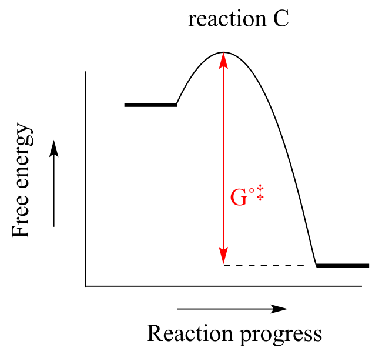Exercise 6.5: Imagine that you are trying to extinguish a burning campfire using buckets of water filled from a faucet some distance from the fire. It takes 20 seconds to fill a bucket at the faucet, and two seconds to carry the bucket to the fire and dump it on the flames. You have plenty of people to carry the buckets, but only one faucet so you can only fill one at a time.
a) If you double the speed at which you carry the buckets by running instead of walking, what effect will this have on how fast you get water to the fire?
b) If, instead, you realize you can double the speed at which you fill up the buckets by opening the faucet a couple of turns, by what percent will you speed up the entire process?
c) What is the rate-determining step for the process?
E6.5:
a) No change. The water carriers will each be waiting a little longer to get a bucket to carry, but water will not be delivered any faster.
b) Your rate will double.
c) Filling buckets is the rate determining step of the process. This of course is an analogy for a two step chemical reaction, with one slow (rate-determining) step, and one fast step.
E6.6:
a) Endergonic (D is higher in energy than A)
b) Three steps
c) Two intermedia/ICE_solutionstes (B and C)
d, e)

f) C to B in the reverse direction (activation energy from C to middle transition state is lowest of the six possible activation energies).
E6.7: While the oxidation of sugar and fat is thermodynamically downhill (exergonic), in terms of kinetics it is very slow - without a catalyst, oxidation will not occur at an appreciable time frame. In other words, the energy barrier to oxidation is high. When we ‘burn’ (oxidize) sugar and fat in our cells, the process is vastly accelerated by enzymes (specifically the enzymes of glycolysis, fatty acid oxidation, the citric acid cycle, and oxidative phosphorylation - we will see many of the individual enzymatic reactions later in this textbook, and you will see how these pathways fit together when you study biochemistry).
Chapter 7#
E7.1:

E7.2:Remember that the stronger conjugate acid has the weaker conjugate base. From the table of approximate pKa values given in this section, CH3SH (pKa ~ 10) is a stronger acid than CH3OH (pKa ~ 15) , so CH3O- is the stronger base.
Following the same reasoning and using the given approximate pKa values of the conjugate acids, ammonia (NH3) is a stronger base than acetate (CH2COO-), and hydroxide (OH-) is a stronger base than acetate.
E7.3:
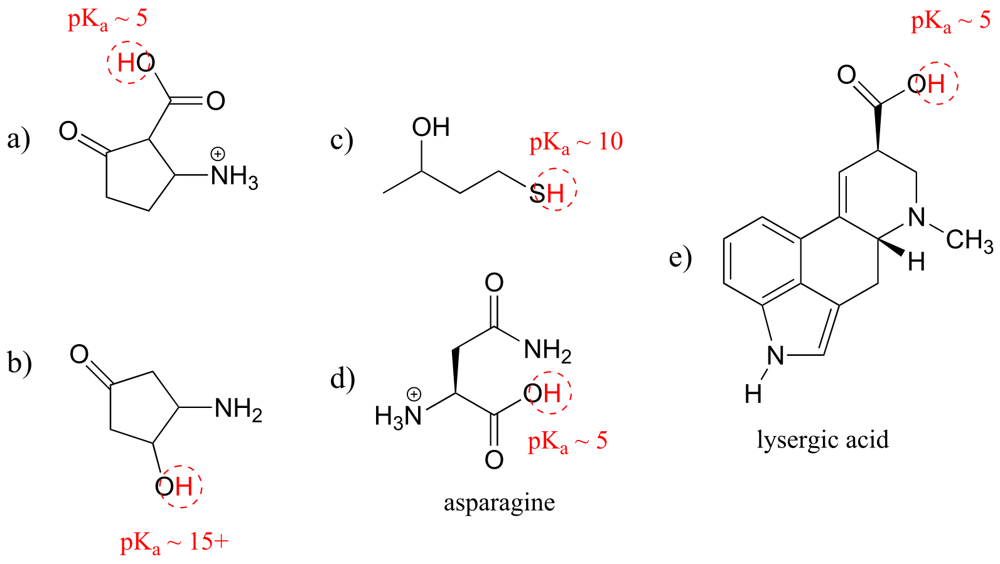E7.4:
a)
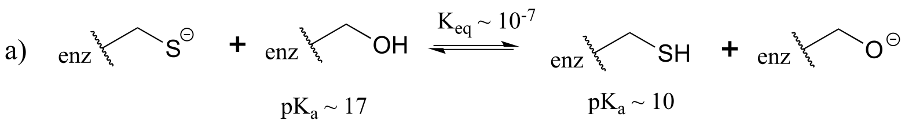b)

c)

d)

E7.5:
The ratio of base to acid is 40/30, or 1.33
log 1.33 = 0.125
pH = 4.8 + 0.125 = 4.9 (to two significant figures)
E7.6:

E7.7:
We use the Henderson-Hasselbalch equation and let the base to acid ratio be X.
For pH = 2.8:
2.8 = 4.8 + log X
X = 0.01 to 1
pH 3.8, the ratio is 0.10 to 1
pH 4.8, the ratio is 1.0 to 1
pH 5.8, the ratio is 10 to 1
pH 6.8, the ratio is 100 to 1
E7.8: Phenol has a pKa of about 10, so the Henderson-Hasselbalch equation tells us that at pH 2 and 7, it will be protonated, and thus uncharged and insoluble in the buffer (phenol is quite nonpolar). At pH 12 it will be ionized (to the phenolate ion) and thus soluble (recall that ions are usually very water soluble due to strong ion-dipole interactions between solute and solvent).
E7.9: If we take the pKa of methylamine to be approximately 10, then we estimate by the Henderson-Hasselbalch equation that approximately 10% of the molecules are in the amine form, and 90% in the ammonium form (the buffer pH is one unit lower than the pKa of the acid). More precisely, we can look up the pKa of methylamine in a table to find that is it 10.7. By the Henderson-Hasselbalch equation, the ratio of base (amine) form to acid (ammonium) form is 0.01995 to 1. Thus 19.6% are in the base form.
E7.10: We must consider the protonation state/charge of all ionizable groups on the peptide - including the terminal amino and carboxylic acid groups - at pH 7.
terminal amino: +1
Cys: thiol, 0
Asp: carboxylate, -1
Lys: ammonium, +1
Glu: carboxylate, -1
terminal carboxylate: -1
Net charge is therefore approximately -1.
E7.11:
a)

b) The negative charge on nitrate, the conjugate base of nitric acid, is delocalized over three oxygen atoms. Extensive delocalization of the negative charge over three electronegative atoms lends substantial stability to the conjugate base, thus nitric acid is a strong acid.
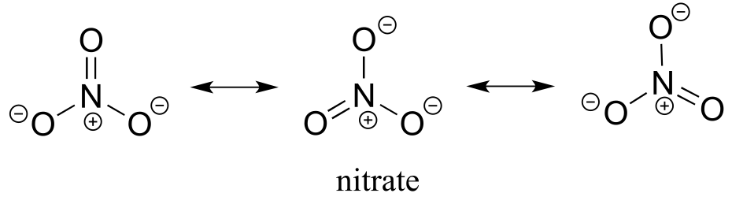E7.12: The order is strongest acid A > B > C weakest acid.
The two functional groups we see are aldehyde and ammonium/amine. Recall that aldehydes are not acidic, so we need only consider the amine/ammonium group. Compound C is not acidic at all - it is an amine (the pKa of an amine is somewhere around 35). Compounds A and B both contain an ammonium group, which is a weak acid. However, consider the conjugate base of compound A:

The lone pair on the conjugate base (amine) can be delocalized as part of a conjugated system. Remember that electron density delocalization is a stabilizing effect, and that if a conjugate base is stabilized, the conjugate acid is stronger.
Delocalization is not possible with compound B, due to the different position of the amine group relative to the alkene. So B is less acidic than A.

E7.13:


E7.14: most acidic A > C > B least acidic
The inductive effect is strongest in A, because chlorine is more electronegative than bromine. In C the bromine is closer to the acid group than in B, so the electron-withdrawing inductive effect in C is stronger.

E7.15:
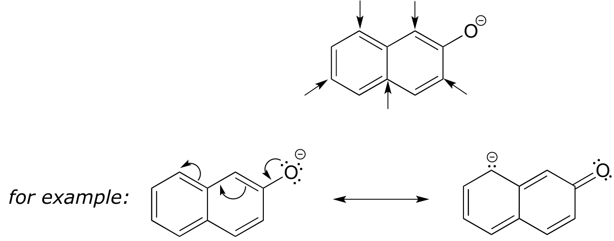
E7.16: The para-subsituted phenol is more acidic, because the negative charge on the conjugate base can be delocalized to the aldehyde oxygen. This is not possible when the aldehyde group is in the meta position (try drawing curved arrows to convince yourself of this - the negative charge can be delocalized to ring carbons, but not the aldehyde oxygen).

E7.17: Compound B is the strongest acid due to electron-withdrawing resonance effects- the negative charge on the conjugate base can be delocalized to the aldehyde oxygen. Compound A is the 2nd strongest acid - while the negative charge on the conjugate base cannot be delocalized to the aldehyde oxygen due to the meta position (see previous exercise), the aldehyde nonetheless has a stabilizing, electron-withdrawing inductive effect. Compound D is ranked #3 - it is phenol, and does not have any electron-withdrawing substituents on the ring as do B and A. Compound C is the least acidic - neither the phenyl group nor the aldehyde are even slightly acidic (remember - aldehyde protons are not acidic!)

E7.18: The negative charge on the conjugate base of picric acid can be delocalized to oxygen atoms on all three of the nitro groups. One such resonance contributor is shown below. This extensive delocalization means that the conjugate base is very stable, and the conjugate acid is thus a very strong acid.

E7.19: The compound on the left has the highest pKa (weakest acid): the negative charge on the conjugate base is destabilized by resonance with the electron donating ether oxygen atom. On the middle compound, the ether oxygen atom can act as a stabilizing electron withdrawing group by the inductive effect, so this compound has the lowest pKa (most acidic).

E7.20: Compound A is the weaker base. In compound A, a resonance contributor can be drawn in which the lone pair electrons on the nitrogen are delocalized as part of a conjugated system which includes the aldehyde oxygen (in other words, the aldehyde group is acting as a stabilizing, electron withdrawing group by resonance effect).

The same cannot be said for compound B (draw some resonance contributors to convince yourself!) so the lone pair electrons on the nitrogen are less stable, that is, more basic.
E7.21:
a)
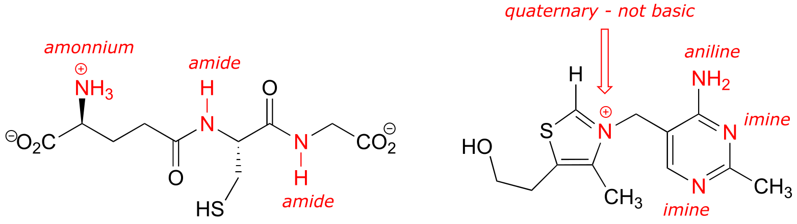

b) One of the nitrogen groups in tetrahydrofolate could be considered an ‘extended amide’, because a resonance contributor can be drawn in which there is a separation of charge between the nitrogen and a carbonyl oxygen, just like for a ‘normal’ amide. This ‘extended amide’ nitrogen, like other amide nitrogens, is not basic, rather it is weakly acidic, with a pKa in the range of 18-20.

Note that this nitrogen could also be considered as an ‘aniline-like’because it is conjugated to an aromatic ring. However, the stabilizing resonance effect of being conjugated to a carbonyl (the ‘amide characteristic’) is stronger than the stabilizing resonance effect of being conjugated to an aromatic ring (the ‘aniline characteristic’), so this nitrogen is likely to have acid/base properties closer to those of an amide than to those of aniline.
E7.22:
a)

b)
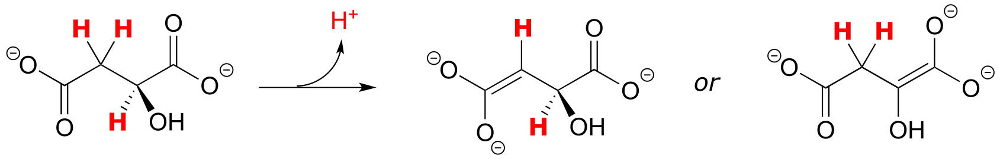


E7.23:
a)

b)

c)

d)

E7.24: There are many possibilities: the key is that the molecule should not have any α-protons. Below are two aldehydes and one ketone than cannot form enol tautomers; check your answers with your instructor or tutor.

**
**
E7.25:

E7.26: The hypothetical keto form of phenol is not aromatic - thus the aromatic enol form is much lower in energy.
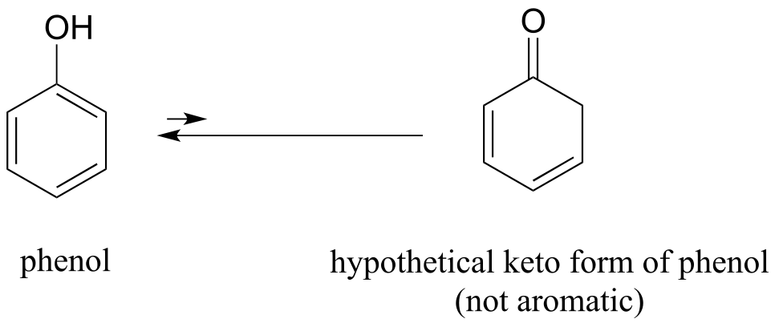
E7.27:
a)

b)

c)

E7.28: The carbon is sp hybridized, so the same argument discussed in this section applies. In addition, the nitrogen atom is electron-withdrawing, which stabilizes the negative charge on the conjugate base (cyanide ion).
E7.29: The diprotonated form of phosphate (H2PO4-) has a pKa very close to physiological pH, so the Henderson-Hasselbalch tells us that in physiological buffer phosphate will exist mainly as a roughly 50:50 mixture of H2PO4- and HPO42-, with a net charge of approximately -1.5.

E7.30: A nonpolar microenvironment will destabilized the cationic (ammonium) form of lysine, thus making it more favorable to donate a proton - in other words, the microenvironment will lower the pKa of the side chain.
E7.31: The magnesium cation stabilizes the negative charge that develops on the carbonyl oxygen when an α-proton is abstracted. A more stable conjugate base, as we know, means a stronger acid, so the pKa of the α-protons is lowered by the magnesium cation.

Chapter 8#
E8.1: The H-C-O angle in the transition state pictured is 90o.
E8.2: The product is an ether.

**
**
E8.3
a)

b)

c) The product is expected to be a 50:50 racemic mixture (of R and S enantiomers), so there will be no observed optical rotation (0o).
d) No - recall that enantiomers have the same physical properties and cannot be separated by silica, recrystallization, solubility, etc.
E8.4:
a)

b) No observed optical rotation (50:50 mixture of enantiomers).
c)
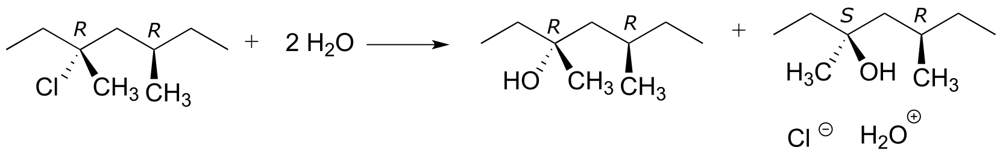
d) The product is a mixture of diastereomers. Because diastereomers do not necessarily have equal but opposite optical rotations (like enantiomers do), we cannot predict the optical rotation of the product mixture.
E8.5: Serine is more nucleophilic than tyrosine: on tyrosine, the electron density on the oxygen atom is delocalized to some extent by resonance with the aromatic ring, making it less reactive (ie. less nucleophilic) This is the same argument we used to explain why phenol is a stronger acid than ethanol - the phenolate ion is a weaker base (see section 7.4). Steric effects (see below) also make tyrosine less nucleophilic than serine.
E8.6: Cysteine (a thiol) is more nucleophilic than methionine (a sulfide). The bulkier methyl carbon bonded to the methionine sulfur hinders nucleophilic attack, and in addition the sulfide methyl group on methionine, unlike the thiol proton on cysteine, cannot be removed by a base, so the product of nucleophilic attack by a methionine side chain will have a sulfur with three bonds and a positive formal charge. In fact, methionine rarely acts as a nucleophile, although an important exception is in the formation of the cofactor S-adenosyl methionine (see section 8.7A and Exercise 8.18).
Serine (a primary alcohol) is more nucleophilic than threonine (a secondary alcohol) due to the steric hindrance of the extra methyl group on threonine.
E8.7:
a) Phenolate, due to electronic effects. Phenolate is the stronger base, and also the better nucleophile (pKa of phenol is ~10, pKa of benzoic acid is ~5)
b) Water (hydronium ion is positively charged, water is neutral)
c) Trimethylamine (steric effects)
d) Chloride ion (vertical trend in the context of polar, aprotic solvent - in a protic solvent like water, iodide ion is more nucleophilic)
e) CH3NH- : anion more nucleophilic than neutral amine
f) Acetate is the stronger base (consider the base-stabilizing inductive effect of chlorine substituents) and also the better nucleophile.
g) 4-methoxyaniline due to electronic effects. Methoxy group is an electron donating group, making the nitrogen more basic and more nucleophilic.
h) Phenolate is less hindered, thus the better nucleophile.
E8.8: 1-bromo-3-methylbutane is the less hindered electrophile, and thus would react faster in an SN2 reaction.

E8.9: The conjugated π system is composed of 7 p orbitals overlapping to share 6 π electrons.
E8.10: most stable B > A > C least stable. This is an example of resonance and inductive effects acting in opposite directions. Carbocation B is stabilized by resonance with the oxygen atom, which acts as an electron-donating group by resonance. In A and C, the oxygen atom cannot be an electron donating group by resonance due to the relative positions, but it does act as a (carbocation destabilizing) electron withdrawing group by induction, with a stronger effect seen for C due to closer proximity.
E8.11: Recall (section 7.6D) that vinylic carbanions are more stable than single-bonded carbanions, because increased s character in the hybrid orbitals (sp2 vs. sp3) makes the vinylic carbon more electronegative. The same forces that stabilize a carbanion will destabilize a carbocation: the vinylic carbon is more electronegative, and thus is not able to bear a positive charge as well.
E8.12:

**
**
E8.13:

E8.14: The more stable carbocation is boxed.

Reasoning:
a) tertiary vs. secondary
b) tertiary vs. tertiary-allylic
c) tertiary vs. secondary
d) more stable carbocation is further from electron-withdrawing fluorine
e) more stable carbocation can be delocalized by resonance with nitrogen
f) carbocation delocalized over two tertiary carbons vs. one tertiary and one secondary
**
**
E8.15:

Reasoning:
a) thiolates are weaker bases and better leaving groups than alkoxide (pKa of thiol is ~10; pKa of alcohol is ~15+)
b) Leaving group is a sulfide vs thiolate. Sulfides are very weak bases, thus very good leaving groups.
c) HBr (pKa = -9) is a stronger acid than para-toluenesulfonic acid (pKa = -2.8), so bromide ion is a weaker base and better leaving group than para-toluenesulfonate.
d) Both are sulfonate leaving groups, but the inductive effect of fluorines stabilizes the negative charge on the fluorinated leaving group by inductive effects (see section 7.3C)
E8.16: The vertical periodic trend in acidity (section 7.3A) tells us that thiols are more acidic than alcohols, and thus that thiolates are weaker bases - and better leaving groups - than alkoxides. By extension, sulfides are weaker bases than ethers. The sulfide in S-adenosylmethionine is an excellent leaving group, one of several factors making SAM a very effecting methyl group donor.
**
**
E8.17: The electrophile is a primary carbon, so this reaction is expected to be SN2.
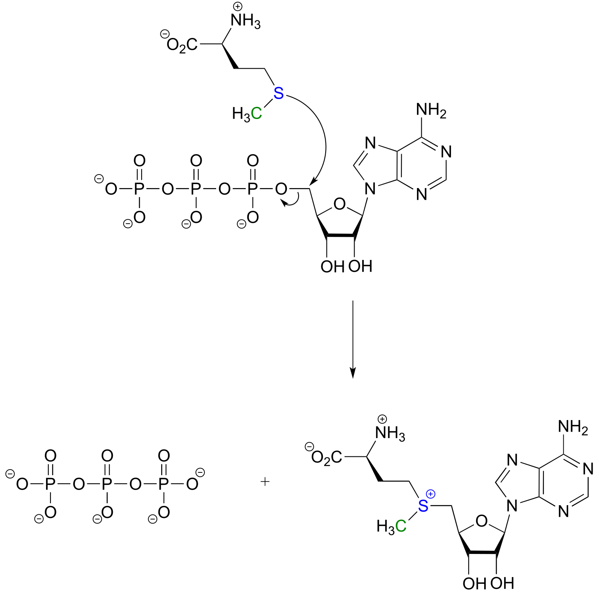E8.18: To make the desired ether product, he should have switches the roles of the nucleophile and electrophilic species, using a tertiary alcohol nucleophile and a primary alkyl bromide electrophile:

Chapter 9#
E9.1:
a) Compound III contains two phosphate anyhydride linkages, compound IV contains one.
b) Compound I contains two phosphate monoesters; compounds II, III, and IV contain one each.
c) Compound V contains a phosphate diester.
d) Compound IV is an organic diphosphate (in contrast, compound I would be called an organic bisphosphate as it has two separate single phosphate groups).
e)
I: two bridging, six nonbridging
II: one bridging, three nonbridging
III: three bridging, seven nonbridging
IV: two bridging, five nonbridging
V: two bridging, two nonbridging
E9.2: Removing the first proton (pKa1) creates a single (resonance delocalized) negative charge, but removing the second proton (pKa2) is more difficult, as doing so creates a second negative charge and thus electrostatic repulsion between the two charges.
E9.3: In this buffer pH = pKa1, so the first proton will be gone in about half of the species. Thus half will have a charge of -1 and half will be neutral, so the net charge will be -0.5).
E9.4:
We’ll use methyl phosphate as a simple example of a phosphate monoester. The three major resonance forms show how the three non-bridging oxygens share a double bond. Another way of putting this is that each of these bonds is a single σ bond plus 1/3 of a π bond – a bonding order of 1.33. However, if we also consider the minor resonance form in which the bridging oxygen is double-bonded (it’s a minor form because of the separation of charge), we can also think of the double bond being shared, in a small part, by the bridging oxygen. We can approximate these ideas by saying that the bridging bond order is slightly more than 1, and the non-bridging bond order is slightly less than 1.33.

E9.5:
a) Oa-P-Oa : 180o b) Oa-P-Oe : 90o c)Oe-P-Oe : 120o
E9.6:
A,E, and I are all representations of an alkyl- or acyl-adenosine phosphate ester (the aspartyl adenosine phosphate species in the first figure of section 10.2E is an actual example of an acyl-adenosine phosphate ester).
F and N are both representations of an organic monophosphate ester, such as glucose-6-phosphate (section 10.2B).
C and G are both representations of an organic diphosphate ester, such as mevalonate 5-diphosphate (section 10.2C).
B, H, K, R, and S are all representations of adenosine triphosphate (ATP – section 10.2A).
D, L and O are all representations of inorganic diphosphate (also known as inorganic pyrophosphate).
J, M, P, and Q are all representations of adenosine diphosphate (ADP).
**
**
E9.7:

E9.8: This reaction (SN2 at a carbon electrophile, not a phosphoryl transfer reaction) does not result in separation of repulsive negative charges. (However, we have already seen one very important of this type of reaction - look again at the mechanism for the generation of S-adenosylmethionine (SAM) that you worked out in Exercise 8.17).
E9.9:
a) We can use a number of alternative abbreviations for ATP and ADP in showing this mechanism, but the ones used below are relatively compact and still show the chemistry taking place at the γ-phosphate of ATP:

b) The threonine kinase reaction does not involve breaking or forming any bonds to the two carbon stereocenters, so we do not expect any changes to stereochemical configuration of threonine.

E9.10: A non-bridging oxygen on the β-phosphate of ADP is the nucleophile, and the leaving group is the carboxylate group of 3-phosphoglycerate.

E9.11: This experiment is reported in J. Biol. Chem. 1961 236, 2284. The results showed that the 18O ended up in inorganic phosphate, leading the researchers to conclude that a phosphate group transfer mechanism was taking place.
Possibility A: phosphate group transfer mechanism. 18O ends up in inorganic phosphate.

Possibility B: Nucleophilic substitution at carbon. 18O ends up on the serine.
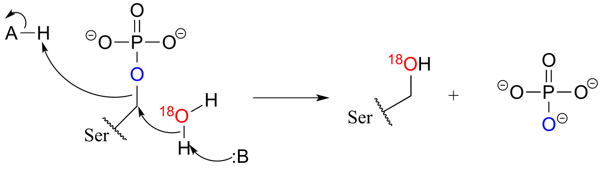
E9.12: The two protons labeled ‘Hc’ are technically not equivalent: they are diastereotopic, either cis or trans to the methyl group (with Hd protons). However, it appears that the electronic environment of these two Hc protons are similar enough that only one signal is observed. With sufficient resolution, we might be able to see that what appears to be a ‘singlet’ is actually a pair of doublets with fine (geminal) coupling of 1-2 Hz.
fig 1b
Chapter 10#
E10.1: Glucose and fructose are constitutional isomers (same molecular formula, but different atom-to-atom connectivity, as glucose is an aldose and fructose is a ketose).
E10.2:

E10.3: The anomeric carbon is indicated by a solid (red) dot.


**
**
E10.4:

E10.5:
A is a hemiketal B is an acetal C is a hemiacetal
D is a ketal E is a hydrate of an aldehyde
E10.6:
a)

b)

E10.7:

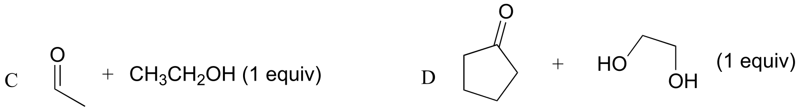
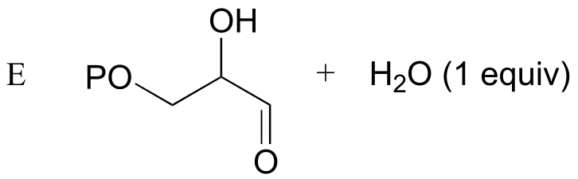
E10.8: It is a question of entropy change, which you should recall is a component of the Gibbs free energy change of a reaction. Forming a new glycosidic bond reduces entropy. which makes it less energetically favorable (it costs energy). Breaking a glycosidic bond increases entropy, making it more thermodynamically favorable.
E10.9: The anomeric carbons have two bonds to oxygen.

E10.10:
a,b) The two #1 carbons are anomeric.

c)

d)

E10.11: Notice that cellulose is a long straight polymer, while amylose is curved in shape. Because of it shape, cellulose forms ordered, rod-shaped crystals with tight packing between individual polymers - this makes the glycosidic bonds less accessible to cellulase enzyme. Amylose, with its curved shape, cannot pack closely and so forms a disordered, amorphous solid, making its glycosidic bonds more accessible to amylose enzymes. (Do an internet image search for ‘cellulose microfibril structure’ )
E10.12:

**
**
E10.13:

E10.14:

E10.15:

E10.16:
a) First, identify the nucleophilic amine nitrogen (in red below), the electrophilic ketone carbon (blue dot), and the ketone oxygen that leaves as water (green).

b)

Chapter 11#
E11.1:
a) carboxylic acid b) thiol c) water
E11.2:
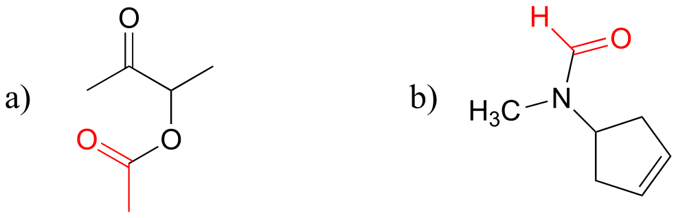
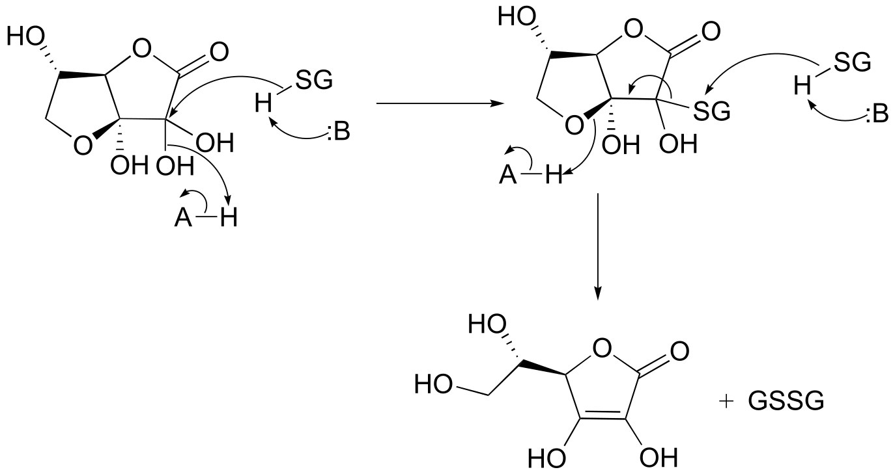
E11.3:

**
**
E11.4:

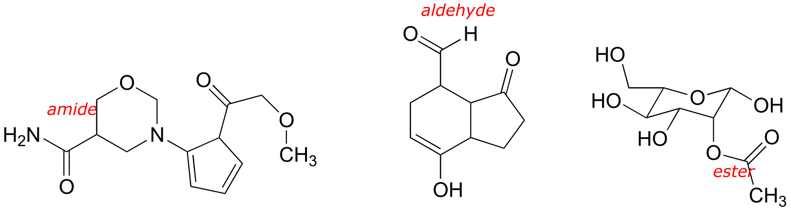
E11.5:

E11.6:

E11.7: This is a transesterification reaction where the leaving group is a phenolate ion (phenol once it is protonated). Because phenolate ions are much weaker bases than alkoxide ions (ie. phenols are stronger acids than alcohols), it follows that a phenolate ion/phenol is a much better leaving group than an alkoxide ion/alcohol, and this reaction is thermodynamically favorable. Recall that the negative charge on a phenolate oxygen is stablized by resonance with the aromatic ring.
E11.8:
a)
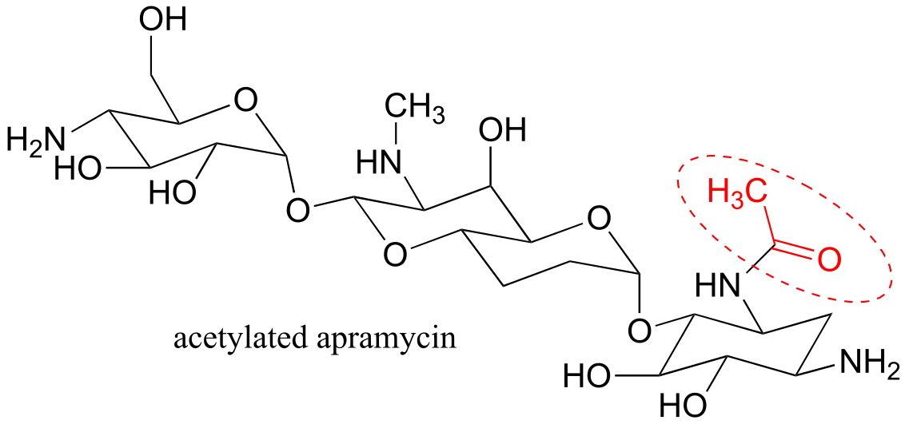
b) A thioester (acetyl-CoA) is the acetyl group donor; an amine (on apramycin) is the acceptor.
c) Coenzyme A
E11.9:
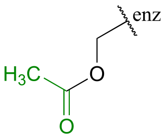
E11.10:
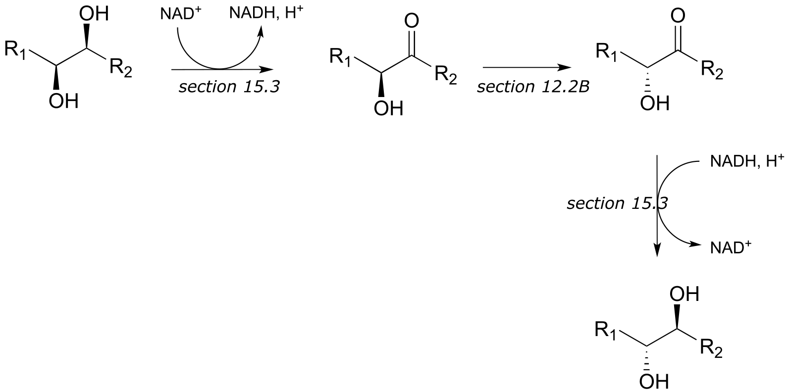
E11.11:

E11.12: The other product is formate (the conjugate base of formic acid). This reaction can be described as the hydrolysis of an amide.
E11.13:
a)

b)

E11.14:
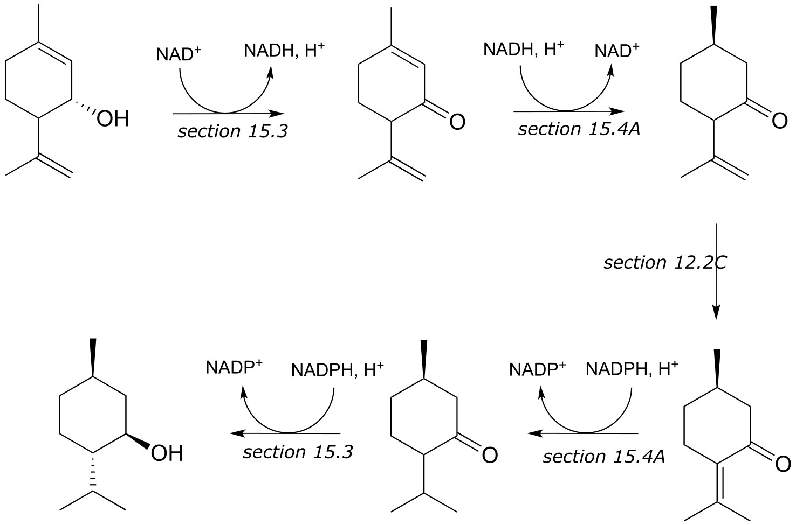
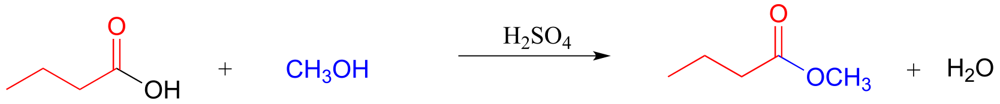
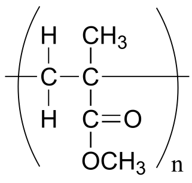
E11.15: Base-catalyzed esterification (starting with a carboxylic and an alcohol) will not work. The base will simply deprotonate the carboxylic acid, and carboxylate groups are very unreactive towards acyl substitution reactions.
**
**
E11.16: This reaction would be described as the acid-catalyzed hydrolysis of an ester.

E11.17: This is an SN2 reaction.
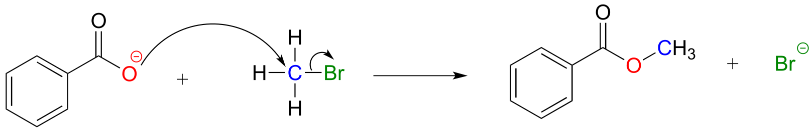
E11.18:

**
**
E11.19:
a)

b) Methanol, CH3OH
E11.20:

E11.21: The negative charge on the conjugate base is delocalized over two adjacent oxygen atoms.

E11.22:
a)
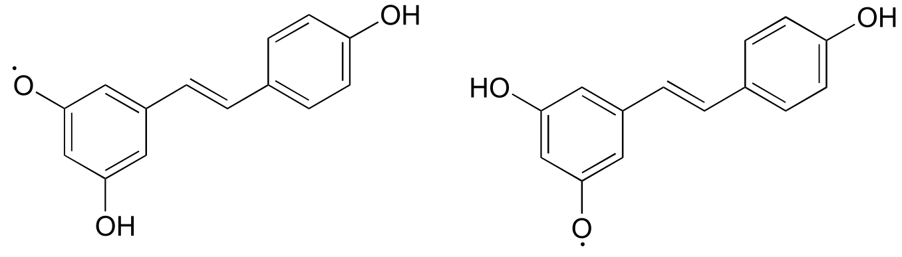
b)

Chapter 12#
E12.1:

E12.2:

E12.3: Change of configuration can only occur at carbons that are alpha to (adjacent to) a carbonyl or imine carbon:

E12.4: The double bond in the product is conjugated to the carbonyl, whereas the double bond in the substrate is isolated (recall that conjugation results in more stability). Also, the product has a trans (E) double alkene, whereas the substrate has a cis (Z) alkene (recall that trans alkenes are generally more stable than cis due to steric factors).
E12.5:

E12.6:
a)

b)
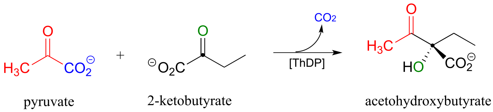
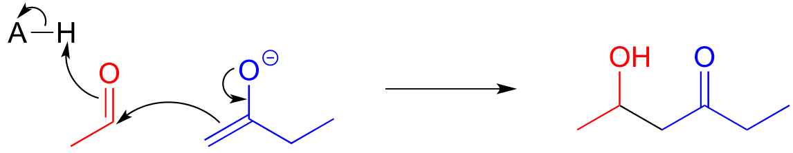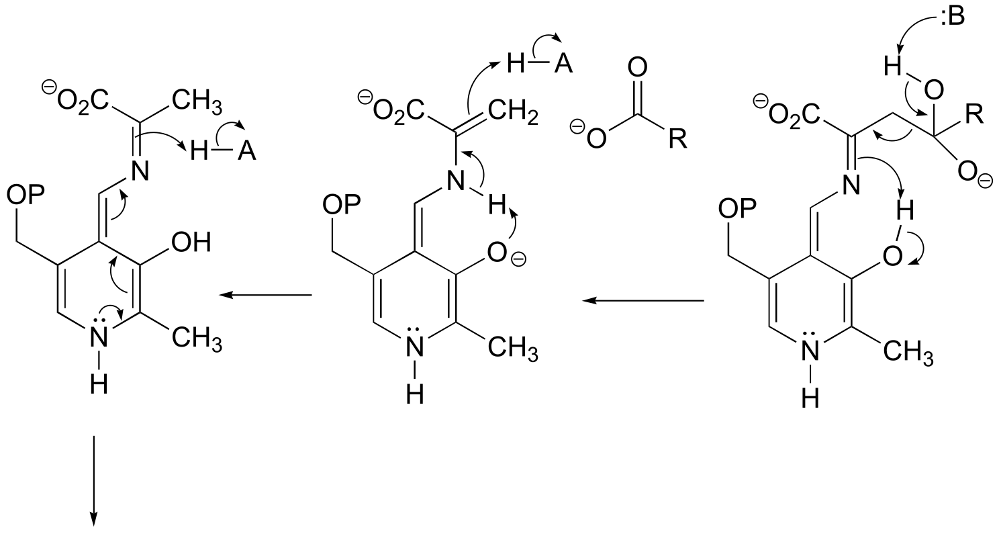
E12.7:
a) In the fructose 1,6-bisphosphate aldolase reaction, the pro-R proton on the α-carbon of DHAP is abstracted, then the re face of the resulting enolate α-carbon attacks the re face of the aldehyde carbon of GAP.
b) In each hypothetical reaction, the nucleophilic and electrophilic carbons are indicated. Both reactions result in the formation of two new chiral centers, so each hypothetical product could have four possible stereoisomers, for a total of eight.
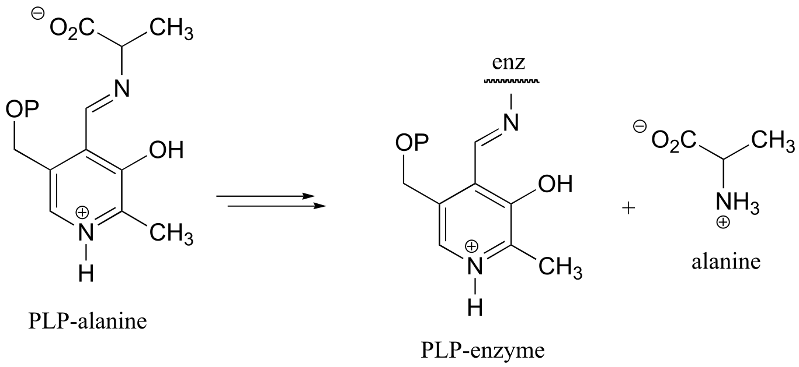
E12.8:

E12.9:

**
**
E12.10:

Interchapter
1:

2:

**
**
3:
4:
5:

6:
Chapter 13#
E13.1:
E13.2:

E13.3:

E13.4:
E13.5:

E13.6: No, because decarboxylation steps in biochemical pathways are generally irreversible, due to entropic factors. The increase in entropy (disorder) caused by release of a gas molecule (like CO2) drives the equilibrium towards product.
E13.7:

E13.8:
a)
b)
E13.9:

E13.10:

E13.11:
E13.12:
Chapter 14#
E14.1:
a)
b)
c)

E14.2:

E14.3: Below is the hypothetical reaction mechanism. Note that the intermedia/ICE_solutionste is a primary (not allylic) carbocation, which is highly unlikely.

E14.4:


E14.5:

E14.6:

E14.7: The ‘goop’ is a polymer that forms over the course of the reaction as the carbocation intermedia/ICE_solutionste, rather than undergoing elimination, is subjected to electrophilic attack by unreacted alkene. The result of this step is another carbocation, which allows the polymer to continue growing.
E14.8: Alkenes are ranked by decreasing stability.


E14.9:
a)

b)

c)

E14.10:
**
**
E14.11:
E14.12:
a)
b) Two factors contribute to a driving force for the reaction. First, the reaction results in the formation of an aromatic ring - reactions that produce a new aromatic system are almost always thermodynamically favorable. Second, decarboxylations are inherently energetically favorable due to the increase in entropy caused by release of a gas molecule.
**
**
E14.13:

E14.14: IPP is the five-carbon species added to geranyl diphosphate to make the 15-carbon farnesyl diphosphate.

**
**
E14.15:

E14.16:

**
**
E14.17: Electrophilic addition to an aromatic ring would destroy it aromaticity, and thus is thermodynamically unfavorable.
E14.18:

E14.19:
a)


b) The hypothetical carbocation intermedia/ICE_solutionste below, which lead to a meta substitution product, cannot be stabilized by delocalizing the positive formal charge on to the oxygen atom. In other words, the oxygen cannot act as a carbocation-stabilizing electron-donating group.
E14.20:
These groups are ring-activating because they stabilize the carbocation intermedia/ICE_solutionste by resonance:

The ethyl group is ring-activating by inductive effect only (remember from section 8.3B that increased substitution by alkyl groups will stabilize a carbocation).
These groups are ring deactivating, because the carbonyl acts as an electron withdrawing group, destabilizing the carbocation intermedia/ICE_solutionste.

b) In the intermedia/ICE_solutionste leading to either the ortho or para product, the positive formal charge can be delocalized to a carbon adjacent to the electron-withdrawing (ring-deactivating) group, where the positive charge is highly unstable.

However, in the intermedia/ICE_solutionste leading to the meta product, a resonance contributor cannot be drawn in which the positive formal charge is adjacent to the carbonyl. Thus, the meta product is the most abundant.
c) The carboxylic acid group is ring-deactivating and meta-directing, and indeed the new substituent ends up meta to the carboxylic acid. The OH group is ring-activating and ortho/para directing, and indeed the new substituent ends up ortho to the OH (it cannot end up in the para position as that is already occupied by the carboxylic acid.

E14.21:


E14.22:
E14.23:
**
**
E14.24:
a)

b)

Chapter 15#
E15.1: Zinc metal is being oxidized (it loses two electrons to become zinc cation). Copper cation is being reduced (it gains two electrons to become copper metal).
Cu+2(aq) + Zn(s) → Cu(s) + Zn+2(aq)
E15.2: One carbon changes to a higher oxidation state (gains a bond to an oxygen), while the other carbon changes to a lower oxidation state (gains a bond to hydrogen). The net oxidation change is zero, this this is not a redox reaction.

E15.3:
a) reduction (ketone to alcohol)
b) reduction (carboxylic acid derivative to aldehyde)
c) oxidation (alkane to alkene)
d) oxidation (aldehyde to carboxylate)
e) not redox (one carbon is reduced -alcohol to alkane - and one is oxidized -amine to ketone)
**
**
E15.4:
a)
b)
E15.5:
a) This is a description of a hemiacetal/hemiketal forming reaction (section 10.2)
b) This is a description of an aldol addition reaction (section 12.3)
E15.6: The nicotinamide is positioned next to the re face of the ketone (the face we are looking in this figure). Attack of the hydride at the re face leads to an alcohol with the OH group pointing back into the plane of the page, which in this case corresponds to S configuration.

E15.7: The zinc cation serves as a Lewis acid, accepting electron density in the carbonyl bond to create a larger partial positive charge in the carbonyl carbon, which makes this carbon a better electrohile.
E15.8: The reaction is part of a biosynthetic pathway, thus we predict that phosphorylated nicotinamide is used.

E15.9:

E15.10: The two stereoisomers do not form in an equal ratio because the starting ketone is part of a fused rig system, and the two faces of the ketone are not equal as is the case in most ketones. It is not obvious from looking at the camphor structure, but approach of the reducing agent from the ‘top’ side is more hindered than from the ‘bottom’ side, and thus more of isomer A forms than isomer B. 1H-NMR can be used to quantify the ratio, because HA and HB in the two products are in different environments and have different chemical shifts. Simply integrating under each of these signals gives a fairly accurate determination of the ratio of the two isomers.

E15.11:

E15.12:
E15.13:
a) For every molecule of substrate that is oxidized, one molecule of NADP+ is reduced to NADPH. We can determine the concentration of NADPH formed by using its extinction coefficient, ε = 6290 M-1 cm-1.
So the amount of substrate oxidized is (1.53 x 10-5 M)(1 x 10-3 L) = 1.53 x 10-8 moles.
b) (100 x 10-6 M) – (1.53 x 10-5 M) = 8.47 x 10-5 M = 84.7 μM.
c)

E15.14: Note that the oxidized form of BME is a dimer.

E15.15:

**
**
E15.16:
E15.17: A secondary ‘carbocation’ has a better migratory aptitude than a primary, thus the right side of the ketone migrates.

E15.18: Note that there is no shift step in this mechanism, unlike in the Baeyer-Villiger mechanism.

Chapter 16#
E16.1:

E16.2:

E16.3: Chlorine is a starting material for the reaction, but butane would be an undesired product which would reduce the over yield of the desired haloalkane product.

E16.4: Note that the intermedia/ICE_solutionstes are benzylic radicals, which are resonance-stabilized.
Chapter 17#
E17.1:

E17.2:

E17.3:
a) Refer to the first step of the generalized mechanism in Exercise 17.2 above: here, the ‘R2’ group on the amine acceptor substrate is a hydrogen (ie. the substrate is an aldehyde).

b) The carbon indicated by the arrow eventually becomes the α-carbon of arginine. Note that loss of the acetyl group (inside the dashed box) through amide hydrolysis will yield the amino acid structure that goes on to form arginine.
E17.4:

**
**
E17.5:
E17.6: In general, reactions involving decarboxylation steps are essentially irreversible due to the large entropic driving force of the ‘freeing’ of a gaseous CO2 molecule.
E17.7: (For the sake of clarity, curved arrows are not drawn and mechanistic steps are combined). This first part of this reaction is ThDP-facilitated decarboxylation:
The ThDP-stabilized carbanion intermedia/ICE_solutionste then acts as a (carbon) nucleophile in a conjugate (Michael) addition step, followed by expulsion of the coenzyme:

Finally, elimination of the enol form of pyruvate occurs via an E1cb mechanism:

**
**
E17.8: For the sake of clarity, many of the mechanistic curved arrows are omitted.
E17.9: The glycinamide ribonucleotide transformylase reaction would be expected to inherently more kinetically favorable because the nucleophile is a primary amine. In contrast, the nucleophile in the aminoimidazole carboxamide transformylase reaction is an ‘pyrrole-like’ / ‘aniline-like’ nitrogen in the sense that the nitrogen lone pair electrons are stabilized by resonance with the carbonyl group as well as the aromatic ring (see section 7.5). Therefore, this nitrogen is less basic - and less nucleophilic - than a primary amine.

**
**
E17.10: ‘Product X’ is glutamate, the end product of the histidine degration pathway.